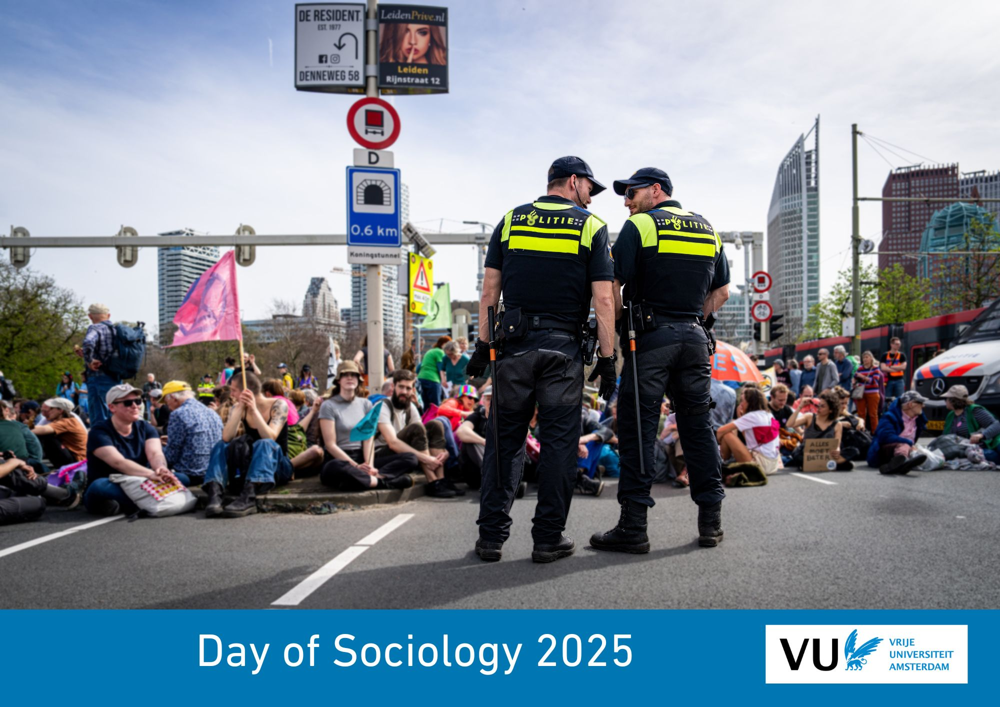

Plan your route here. Choose the Main Building of the Vrije Universiteit Amsterdam as your destination, De Boelaan 1105, Amsterdam.
Train:
You will find the Main Building of the VU Amsterdam here:
Figure 1: VU Main Building
A host or hostess is present in every building. You can contact them with any questions you may have. People with disabilities who encounter a problem and are not near a Central Hall can call: 020 59 85854.
For more information about facilities for people with a disability, including the location of accessible toilets, please visit this page.
Figure 2: Map VU Campus
citizenM hotel Amsterdam Zuid
Prinses Irenestraat 30, Amsterdam
Hotel Ibis Budget Amsterdam Zuid
Prof J. H. Bavincklaan 1, Amstelveen
Hotel NH Amsterdam Zuid
Van Leijenberghlaan 221, Amsterdam
PREMIER SUITES Amsterdam
The Hourglass - Parnassusweg 376, Amsterdam
Limon
Gustav Mahlerplein 222
Market33, Local Urban Food Hall
A food hall near Amsterdam-Zuid Station (2-minute walk) with around ten different stalls (Thai, Japanese, Mexican, burgers, etc.)
Claude Debussylaan 33
Wagamama
Asian fusion, next to Amsterdam-Zuid Station
Zuidplein 12
De Veranda
Next to the “Amsterdamse Bos” (Amsterdam Forest), with a spacious terrace
Amstelveensweg 764, Amsterdam
Gustavino
Restaurant & Vinoteca
Gustav Mahlerplein 16
: 0641943422